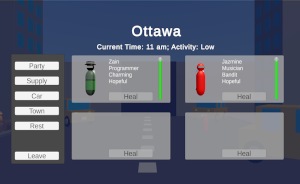

| Projects |
Meeting Room Simulator
|

Mock Game Forum Site
|

The Western Trail

|
Feb. 2024 - Ongoing
As part of a personal project to implement randomly generated concepts into an office meeting room concept.
The game allows you to play as a meeting attendee to ensure that your company's meetings go well. Players must manage their time,
resources, and their own person's resources wisely while ensuring the meetings go well. Otherwise, their job will be on the line.
Created on Unity 3D using C# scripting and database management with NoSQL and MongoDB
|
Jan. 2024 - Feb. 2024
A mock game forum site where users can view and contribute to discussions about games while administrators can manage data and user permissions on the site.
Additonally, it allows admins to create data of games played and keep track of ratings and genres played overtime as an archive.
Created with HTML, CSS, JavaScript, Node.js, Express, and MongoDB
|
Jan. 2023 - Dec. 2023
As part of self-initiated capstone project to showcase project management concepts and further game development skills.
The game allows you to play up to four different save files,
playing as the leader of a team of four people surviving from Montreal to Vancouver in a fictional post-apocalyptic scenario. Players will have to manage
their resources while travelling and resting and defend themselves from the mutants that wander the land. Demo presented Nov. 2023.
When time permits, planning on extending the project with extended graphics and models.
Created on Unity 3D using C# scripting and database management with SQL and SQLite.
|
Personal Portfolio
|

Mental Health Database Application
|

Inventory Management App
|
Sept. 2023 - Feb. 2024
A web portfolio to display my projects, skills, and a bio about me to potential employers and viewers.
This will be continuously updated as
time permits.
Created with HTML and CSS.
|
Sept. 2023 - Nov. 2023
As part of a final group project to create a meaningful application using a database. There are two layers - one for
the application server and one for the database.
Admins can create, read, update, and delete mental health data and end-users
view the data. Intended as an application for doctors in other countries to know appropriate treatments used for mental health.
Created with Python, Flask, HTML, CSS, and SQLite.
|
Sept. 2022 - Aug. 2023
As part of my work during my 3rd and 4th co-op position to help an IT department automate and manage their assets.
End-users would be able to create items, see the amount in stock, take/return assets, view laptop status, USB status, and printer status, and output the data in
multiple formats.
Created on Microsoft Power Platform using Power Apps, Power Automate, and Power Fx.
|
AI Capture the Flag
|

Tabletop Games Site
|

RS Reporting Application
|
Jan. 2023 - Apr. 2023
As part of a final project to showcase goal-oriented behaviour for agents playing a game of capture the flag with elements
of king of the hill.
Agents are split into two teams with three different possible roles, can decide what weapon
they want to equip, and can decide what action to do. Flags can be captured and control points can be captured to help their team.
Created on Unity 3D using C# scripting.
|
Jul. 2022 - Aug. 2022
As part of a final project to create a website with client-side and server-side scripting.
Users can login as customers to purchase
items and as staff to manage the content as a CMS. All data stored in the database is secure, passwords are encrypted, and input
sanitization occurs during form submission.
Created with HTML, CSS, PHP, and MySQL.
|
Jan. 2022 - Mar. 2022
As part of my work during my 2nd co-op position to help an IT department translate their legacy system AS400 queries into
efficient MS SQL queries.
Queries were designed with temporary tables in the process to help speed the query up as much
as possible.
Created with SSRS Report Builder and MS SQL.
|

Online Multiplayer Capture the Flag
|
|
|
Oct. 2021 - Dec. 2021
As part of a final group project to showcase basic game development skills and online multiplayer.
Users can join a game
of capture the flag online up to 4-players. Four weapon choices, two maps, user-friendly UI and
pre-game chatroom are available.
Created on Unity 3D using C# scripting with the Mirror Networking Asset.
|
|
|